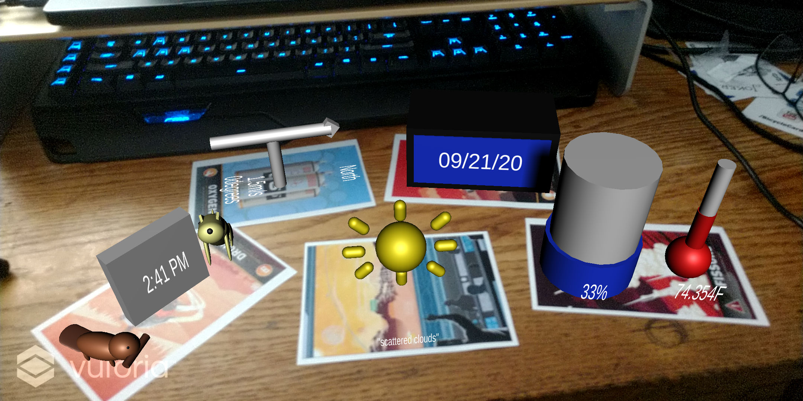
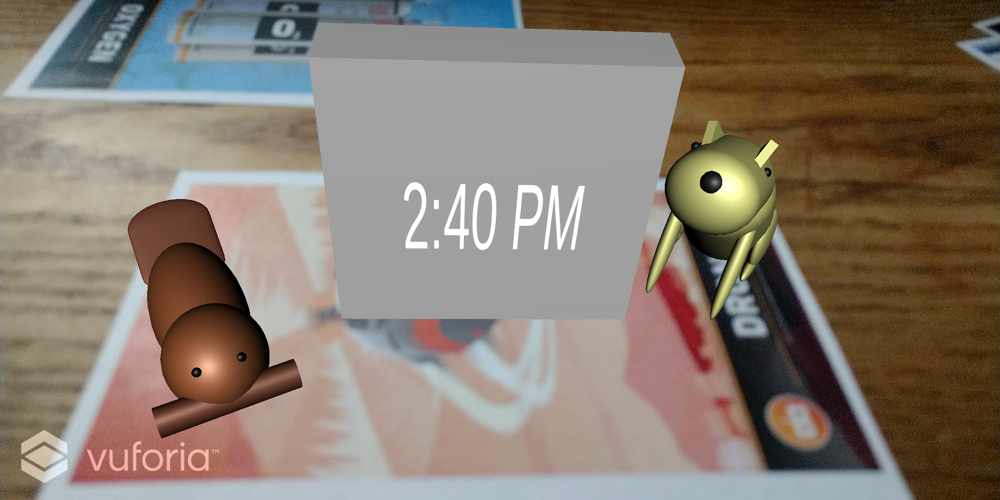
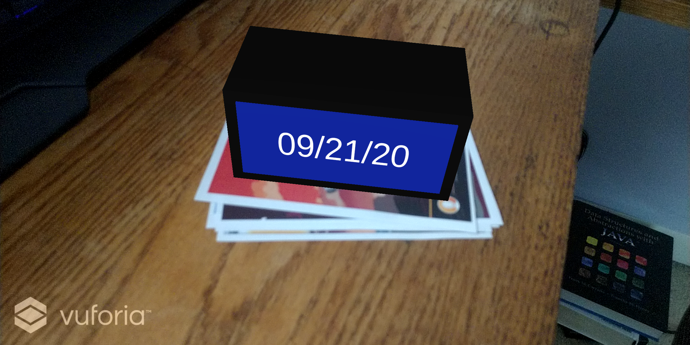
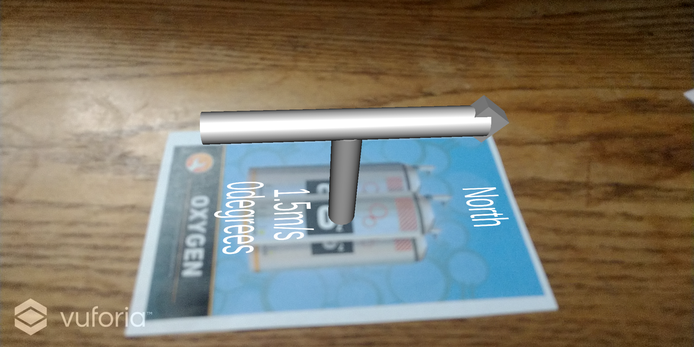
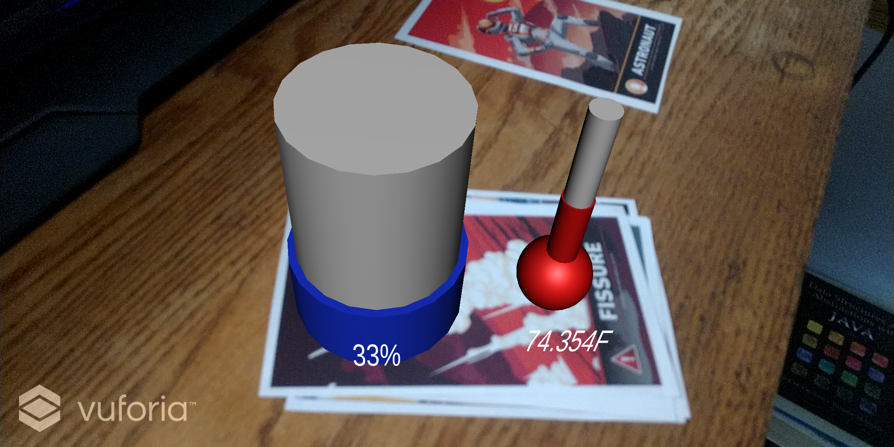

This project uses a camera and Vuforia to display widgets involving time, date and the weather.
The targets can be moved in the real world and update information in every 30 seconds.

The Time Widget Includes a beaver and a wolf as well as displays the current time.

The Date Widget displays the current date on a clock like object.

The wind pointer has text for which direction should be north and points in the current direction of the wind.

The Temperature and Humidity visualizers update thier visuals to reflect the numbers as well.

The weather indicator updates with the current weather and the image can be changed by clicking up or down on the arrow pad for debugging
Proejct with Instructions on how to build using GitHub in readme
GitHub Link
YouTube Presentation Video
YouTube Link
Paper on AR Future Tech
Paper Link